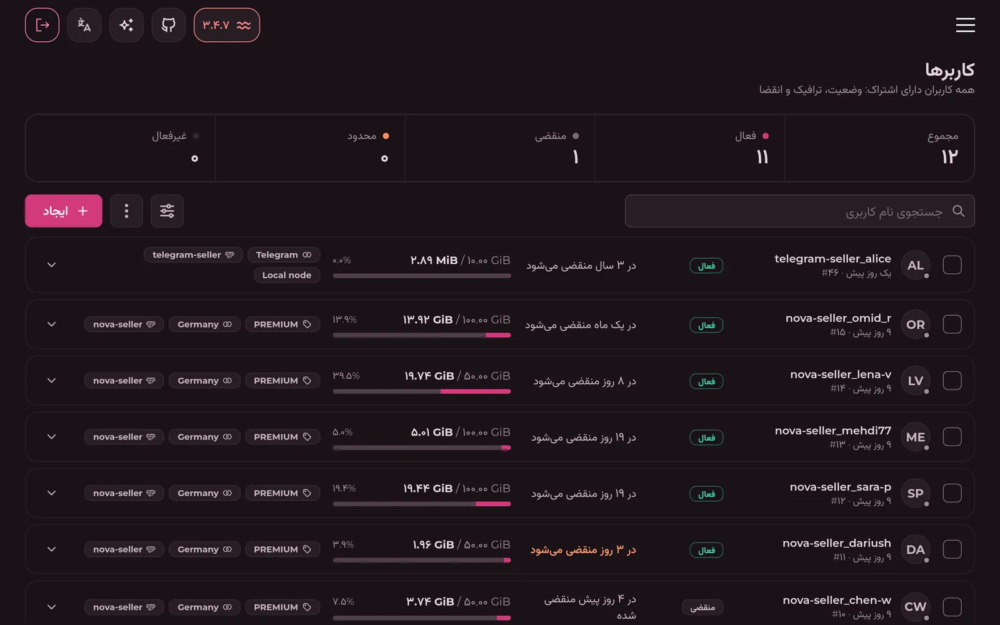
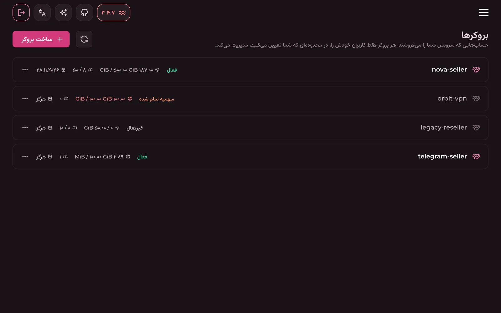
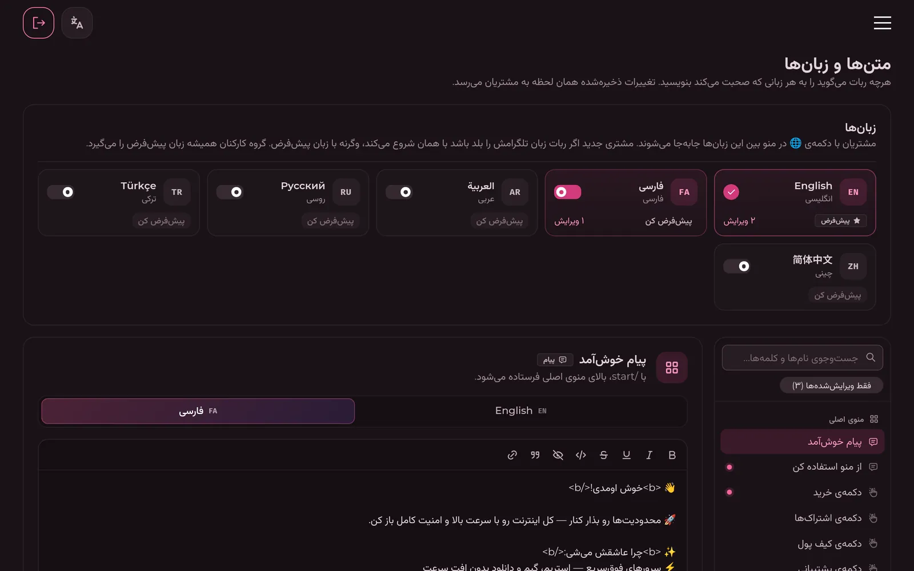

سرورهای Xray، کاربران و نمایندههایتان را از یک پنل اداره کنید.
Umiji پنلی برای Xray-core است که روی سرور خودتان اجرا میشود. نودها، کاربران و اشتراکها را یکجا مدیریت میکنید. نمایندههای فروشتان پنل خودشان را دارند، صفحهی اشتراکی با برند خودشان، و یک ربات فروشگاه تلگرام که برایشان میفروشد.


هشت ایستگاه، از سرور شما تا گوشی کاربر.
هر چیزی در Umiji جایی روی همین مسیر قرار دارد. یک بار یادش بگیرید تا همهی صفحههای پنل برایتان معنا پیدا کند. هر ایستگاه به توضیح کاملش لینک شده است.
پروفایل کانفیگ
تنظیمات Xray که سرورهایتان اجرا میکنند.
اینباند
یک پورت و پروتکل داخل پروفایل، مثل VLESS با REALITY.
نود
سروری که پروفایل را با Xray-core اجرا میکند.
هاست
آدرسی که کاربران به آن وصل میشوند و در برنامهشان دیده میشود.
اسکواد داخلی
اینکه یک گروه از کاربران از کدام اینباندها استفاده کنند.
کاربر
یک اشتراک، با محدودیت ترافیک و تاریخ انقضا.
لینک اشتراک
یک لینک شخصی که همهی هاستهای مجاز کاربر را با خود دارد.
برنامهی کلاینت
Happ، v2rayNG، FlClashX و برنامههای دیگر لینک را وارد میکنند و وصل میشوند.
هر آنچه برای فروش لازم دارید، در یک پنل آرام و مرتب.
ویرایشگر بصری کانفیگ
پروفایلهای Xray را با فرم بسازید، نه با JSON. همهی فیلدها هست، نمای JSON یک کلیک فاصله دارد و یک هستهی واقعی Xray هر تغییر را بررسی میکند.
نود در یک قدم
IP سرور و رمز root را به پنل بدهید. پنل از طریق SSH، Docker و نود را نصب میکند و نود را برایتان اضافه میکند. رمز فقط یک بار استفاده میشود و هیچجا ذخیره نمیشود.
فروشندهها
حسابهای نمایندهی فروش که با همان پنل وارد میشوند و فقط کاربران خودشان را میبینند، در محدودهی سهمیهی ترافیک، سقف کاربران و تاریخ انقضایی که شما تعیین میکنید.
رباتهای فروشگاه تلگرام
هر فروشنده رباتی وصل میکند که پلن میفروشد، پرداخت کارتبهکارت، رمزارز و روشهای دیگر را با بررسی رسید میپذیرد و لینک اشتراک تحویل میدهد.
صفحهی اشتراک با برند خودتان
هر فروشنده صفحهای با یکی از هشت رنگ اصلی دارد، با مراحل نصب برای هر پلتفرم. تغییرات بلافاصله دیده میشوند و نیازی به ریاستارت نیست.
پروکسی تلگرام (MTProto)
پروکسی تلگرام را مثل یک اینباند معمولی اضافه کنید. کاربران آن را مستقیم داخل تلگرام اضافه میکنند و فروشندهها میتوانند کانال اسپانسر خودشان را نشان دهند.
ترمینال SSH در مرورگر
از داخل پنل، روی کامپیوتر یا گوشی، روی هر نود شل باز کنید. کلیدها در مرورگر خودتان ساخته میشوند و هرگز از آن بیرون نمیروند.
انگلیسی و فارسی
پنل، پنل فروشنده و رباتها هر دو زبان را دارند، با چیدمان راستبهچپ برای فارسی. رباتها عربی، روسی، ترکی و چینی هم بلدند.
نمایندههایتان پنل و فروشگاهی میگیرند که حس میکنند مال خودشان است.
فروشندهها، با محدودیتهایی که واقعاً اعمال میشوند
یک فروشنده بسازید و به او سهمیهی ترافیک، سقف کاربران و تاریخ انقضا بدهید. فروشنده با همان آدرس وارد میشود و فقط کاربران خودش را مدیریت میکند.
- وقتی سهمیه تمام شود، کاربرانش خودبهخود متوقف میشوند
- صفحهی اشتراک و تنظیمات خودش را برای برندسازی دارد
- کشورها و پروتکلها را میبیند، نه جزئیات نودهای شما را

فروشگاهی در تلگرام
هر فروشنده یک ربات و یک گروه کارکنان وصل میکند. مشتریها کیف پولشان را شارژ میکنند، با یک لمس پلن میخرند و لینکشان را در همان چت میگیرند.
- پلنها و دستهبندیها، با قیمت به تومان
- کارتبهکارت، رمزارز و روشهای دیگر، با بررسی رسید
- پاداش دعوت و تست رایگانی که هر حساب فقط یک بار میگیرد
- همهی پیامها به شش زبان قابل ویرایشاند، با پیشنمایش زنده

سه راه برای شروع.
از یک سرور خالی تا یک اتصال واقعی
ده قدم با تصویر: نصب، ساختن کانفیگ، افزودن نود، ساختن کاربر و اتصال از گوشی.
باز کردن راهنما 02 · مفاهیمهمهی مفهومهای پنل، با توضیح
کاربرها، نودها، هاستها، اسکوادها، قالبها، فروشندهها، رباتها و ابزارها: هر کدام چیست و چطور به هم وصل میشوند.
دیدن مفاهیم 03 · راهنمای APIپنل را با کد خودتان اداره کنید
توکنها و دامنههای دسترسی، وبهوکهای امضاشده، و همهی اندپوینتها با فیلدها و یک درخواست آماده.
خواندن راهنمای API